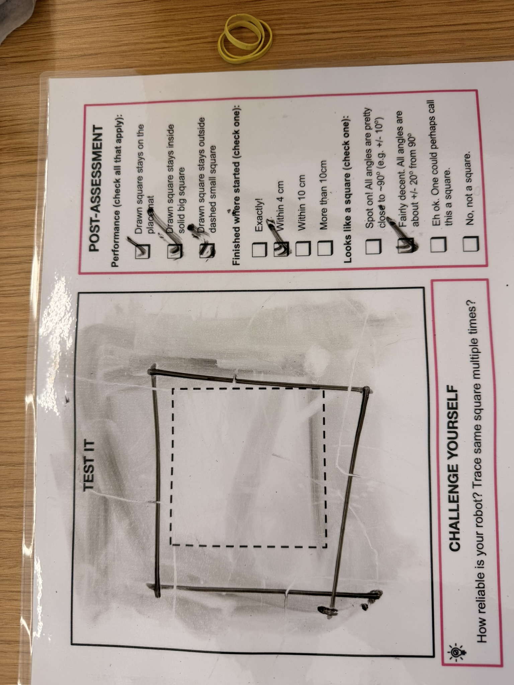

This project focused on drawing a square and documenting the work with the available image and video materials.
Click the image to open the project video in a new tab or download it.
# Start your new code here!
# Setup:
# Left drive motor: port A
# Right drive motor: port B
# Negative drive speed makes the robot move forward, as in your working setup.
from hub import port, motion_sensor
import runloop
import motor_pair
# Set the square size and movement speeds.
SIDE_DEGREES = 190
DRIVE_SPEED = 180
# Turn faster at first, then slow down near each target angle.
TURN_SPEED = 100
SLOW_TURN_SPEED = 50
SLOW_DOWN_AT_DECIDEGREES = 500
# Gyro angles use decidegrees: 900 means 90 degrees.
# Lower the first target because the robot carries on turning after stopping.
FIRST_TURN_TARGET = 880
SECOND_TURN_TARGET = 920
THIRD_TURN_TARGET = 890
FOURTH_TURN_TARGET = 920
TURN_TIMEOUT_MS = 9000
async def main():
# Pair the left and right drive motors.
motor_pair.pair(motor_pair.PAIR_1, port.A, port.B)
# Wait until the robot is stationary before starting.
await runloop.until(motion_sensor.stable)
await runloop.sleep_ms(300)
# Drive four sides and turn at each corner.
for side in range(4):
# Drive one side of the square.
await motor_pair.move_for_degrees(
motor_pair.PAIR_1,
SIDE_DEGREES,
0,
velocity=-DRIVE_SPEED
)
# Choose the gyro target for this corner.
if side == 0:
turn_target = FIRST_TURN_TARGET
elif side == 1:
turn_target = SECOND_TURN_TARGET
elif side == 2:
turn_target = THIRD_TURN_TARGET
else:
turn_target = FOURTH_TURN_TARGET
# Reset the gyro to measure this turn from zero.
motion_sensor.reset_yaw(0)
await runloop.sleep_ms(100)
# Start turning at the faster speed.
motor_pair.move_tank(
motor_pair.PAIR_1,
TURN_SPEED,
-TURN_SPEED
)
# Turn until the slow-down point or the safety timeout.
elapsed_ms = 0
while (
abs(motion_sensor.tilt_angles()[0]) < SLOW_DOWN_AT_DECIDEGREES
and elapsed_ms < TURN_TIMEOUT_MS
):
await runloop.sleep_ms(10)
elapsed_ms = elapsed_ms + 10
# Slow the turn for the remaining angle.
if elapsed_ms < TURN_TIMEOUT_MS:
motor_pair.move_tank(
motor_pair.PAIR_1,
SLOW_TURN_SPEED,
-SLOW_TURN_SPEED
)
# Continue until this corner's target angle or the timeout.
while (
abs(motion_sensor.tilt_angles()[0]) < turn_target
and elapsed_ms < TURN_TIMEOUT_MS
):
await runloop.sleep_ms(10)
elapsed_ms = elapsed_ms + 10
# Stop and let the robot settle before driving the next side.
motor_pair.stop(motor_pair.PAIR_1)
await runloop.sleep_ms(500)
# Stop and unpair the motors when the square is complete.
motor_pair.stop(motor_pair.PAIR_1)
motor_pair.unpair(motor_pair.PAIR_1)
runloop.run(main())